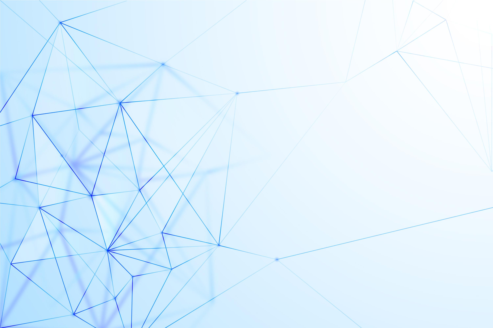

Din digitale sikkerhed,
gjort helt enkel.
Vi har fjernet kompleksiteten fra cybersikkerhed. Træd ind i en verden af klare valg og overskuelig læring.
Total Beskyttelse
Lær at beskytte dine data med de nyeste metoder og værktøjer.
Interaktiv Læring
Ingen tør teori. Vi lærer bedst ved at prøve tingene selv i simulatoren.
Fremtidssikret
Forstå morgendagens trusler i dag og vær et skridt foran.
7 ud af 10
studerende har oplevet forsøg på phishing via deres studiemails.
1 klik
er nok til at installere ransomware og kryptere hele din gruppes drev.
3 minutter
er tiden det tager en fremmed at stjæle din identitet, hvis du forlader din åbne PC.
Forstå de digitale trusler
Kend dine fjender før du starter simulatoren. Her er de 4 største trusler, du kan møde på akademiet.
Det Åbne Netværk
Gæstenetværk er ofte ukrypterede. En hacker kan lave et 'Man-in-the-middle' angreb og overvåge alt, hvad du foretager dig. Brug altid Eduroam.
Læs mere ➔Phishing & Smishing
Social engineering handler om at snyde dig. Falske mails fra "IT-support" eller SMS'er fra "PostNord" skaber panik, så du afgiver vigtige oplysninger.
Læs mere ➔BadUSB Truslen
Et fundet USB-stik kan være manipuleret. Når det sættes i din computer, kan det lynhurtigt køre skadelig kode, der smadrer dit bundkort eller stjæler data.
Læs mere ➔
Fysisk Sikkerhed
Det er ligegyldigt hvor stærkt dit password er, hvis du lader computeren stå åben. Brug altid genvejen Win+L (eller Mac-lås) i kantinen.
Læs mere ➔